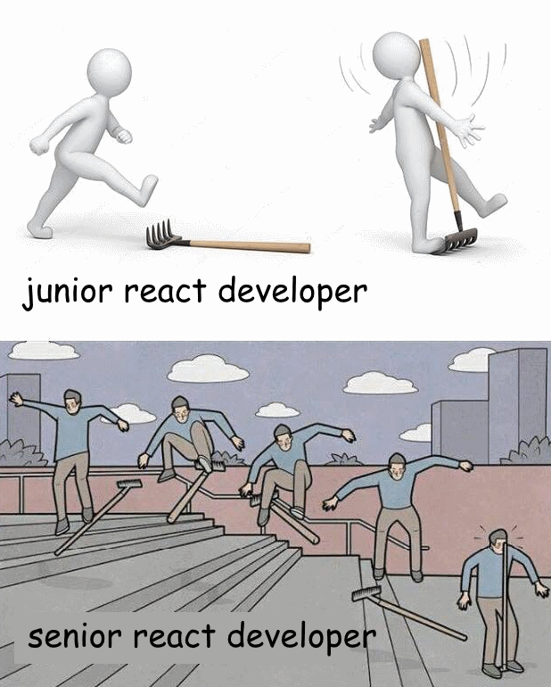
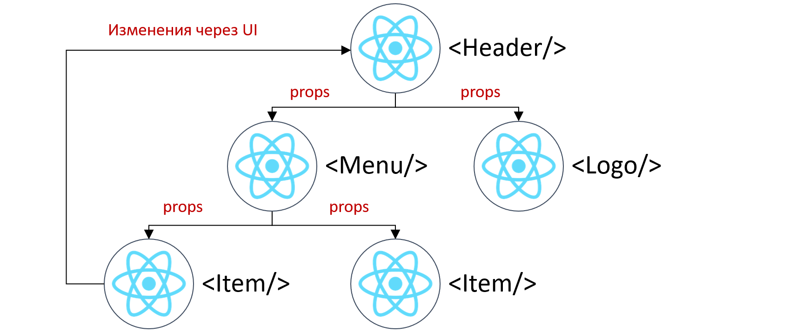
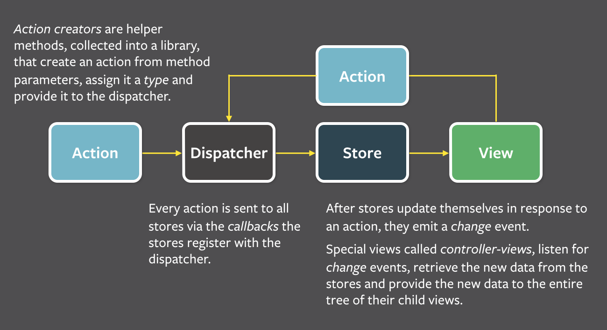
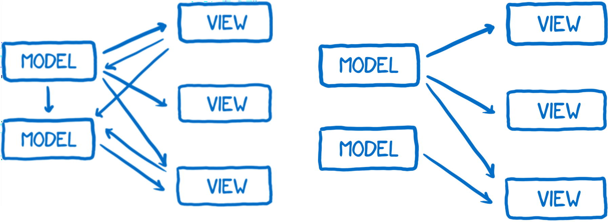
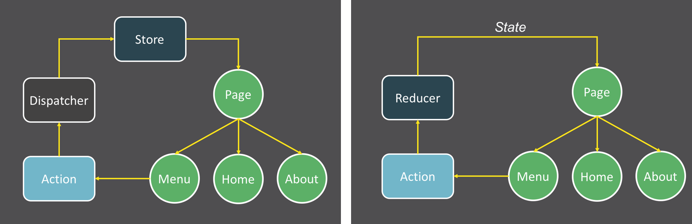
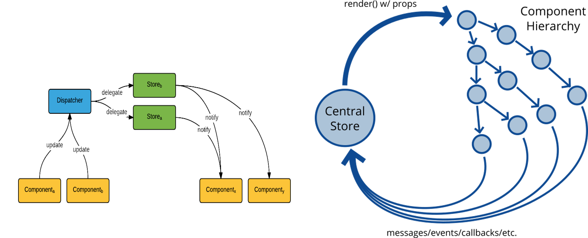
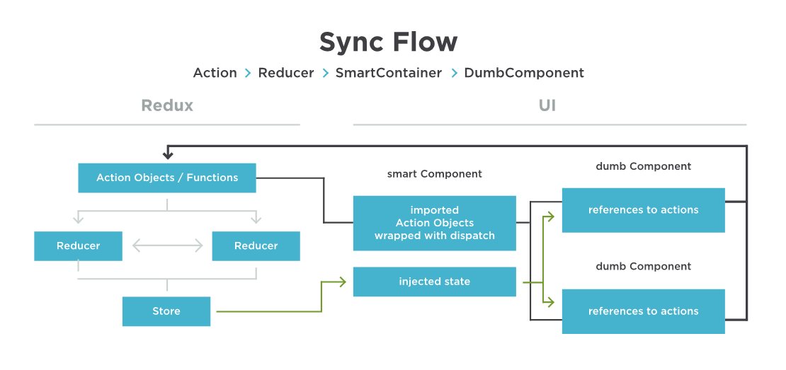

Итоги (промежуточные)

Михаил Кузнецов
Михаил Кузнецов


class Page extends Component {
state = {showDialog: false}
render() {
return <div>
<Dialog visible={this.state.showDialog}
onClose={ () => this.setState({showDialog: false}) }/>
</div>
}
}
const Dialog = ({visible, onClose}) => props.visible && <div>
<button onClick={onclose}>Закрыть</button>
</div>

{
type: "IncreaseCount",
local_data: {delta: 1}
}
{
type: "IncreaseCount",
delta: 1,
silent: true
}

// Для массивов хорошие:
[…arrays],
concat, slice, splice
filter, map
// Для Объектов хорошие:
Object.assign()
{...obj}
var values = {a: 1};
function impureFunction(items) {
var b = 1;
items.a = items.a * b + 2;
return items.a;
}
var c = impureFunction(values);
var values = {a: 1};
function pureFunction(a) {
var b = 1;
a = a * b + 2;
return a;
}
var c = pureFunction(values.a);
function counter(state = 0, action) {
switch (action.type) {
case 'INCREMENT': return state + 1
case 'DECREMENT': return state - 1
default: return state
}
}
let store = createStore(counter)
store.subscribe( () => console.log(store.getState()) )
store.dispatch({type: 'INCREMENT'}) //1
store.dispatch({type: 'INCREMENT'}) //2
store.dispatch({type: 'DECREMENT'}) //1


const todos = (state = [], action) => {
switch (action.type) {
case 'SOME_ACTION': //DO SOMETHING HERE
default: return state;
}
};
const visibilityFilter = (state = 'SHOW_ALL', action) => {
switch (action.type) {
case 'SET_VISIBILITY_FILTER': return action.filter;
default: return state;
}
};
const todoApp = (state = {}, action) => {
return {
todos: todos(state.todos, action),
visibilityFilter: visibilityFilter(
state.visibilityFilter, action
)
};
};
import {createStore} from 'redux'
import todoApp from './reducers'
let store = createStore(todoApp)
{
type: "IncreaseCount",
delta: 1,
silent: true
}
function counter(state = 0, action) {
switch (action.type) {
case 'INCREMENT': return state + 1
case 'DECREMENT': return state - 1
default: return state
}
}
// 0 – это initialState
// Принимает текущее состояние (число) и экшн
// Возвращает новое состояние
const todoApp = (state = {}, action) => {
return {
todos: todos(state.todos, action),
visibilityFilter: visibilityFilter(
state.visibilityFilter, action
)
};
};
const todoApp = (state = {}, action) => {
return {
todos: todos(state.todos, action),
visibilityFilter: visibilityFilter( state.visibilityFilter, action )
};
};
// rootReducer.js
import {combineReducers} from 'redux'
export default combineReducers({ reducer1, reducer2 })
function fetchTodos(url) {
return dispatch => {
dispatch(startFetchingTodos(url))
return fetch(url)
.then(response => response.json())
.then(json => dispatch(todosReceived(url, json)))
}
}
store.dispatch(fetchTodos("http://awesomePlaceWithTodos"))
import {createStore} from 'redux'
import {Provider} from 'react-redux'
import todoApp from './reducers'
let store = createStore(todoApp);
const App = () => (
<Provider store={store}>
<MyRootComponent />
</Provider>
);
ReactDOM.render(<App/>, rootEl);
import { connect } from 'react-redux'
import { toggleTodo } from '../actions'
const mapStateToProps = state => ({ todos: state.todos })
const mapDispatchToProps = dispatch => ({
toggleTodo: id => dispatch(toggleTodo(id))
})
const TodoList = ({ todos }) => ( <ul>{todos}</ul> );
export default connect(mapStateToProps, mapDispatchToProps)(TodoList)
import { connect } from 'react-redux'
import { toggleTodo } from '../actions'
const TodoList = ({ todos }) => ( <ul>{todos}</ul> );
export default connect(
state => ({
todos: state.todos
}),
dispatch => ({
toggleTodo: id => dispatch(toggleTodo(id))
})
)(TodoList)

См в личном кабинете
Спасибо!
Не бойтесь React!